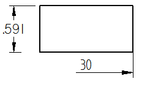

Display a half dimension
You can hide individual dimension lines and projection lines to display a half dimension rather than a full dimension. You also can specify this formatting by editing the dimension properties or the Dimension style.
Hide a dimension line and projection line on a selected dimension
-
Click a dimension line or projection line to display all of the dimension handles. Do not click the dimension text.
-
At the end of the dimension that you want to modify, click the terminator handle (1).
Example:Terminator handle on an ANSI dimension

Terminator handle on an ISO dimension

This displays the dimension formatting menu.
-
Do the following:
-
Clear the Show Dimension Line check mark.
-
Clear the Show Projection Line check mark.
-
-
Click in free space to update the dimension.
Example:Half dimension display (ISO standard)

Format the properties of a half-dimension line
-
Right-click a dimension and choose Properties from the shortcut menu.
-
In the Dimension Properties dialog box, click the Lines and Coordinates tab.
-
In the Dimension Lines section, from the Display list, choose which end of the dimension line you want to display by selecting one of the following:
- Origin
-
For a linear dimension, displays a dimension line on the origin side of the dimension. Origin refers to the first element selected when you place a dimension between two elements; otherwise, the origin end is based on the direction in which the sketch geometry was drawn.
- Measurement
-
For a linear dimension, displays a dimension line on the measurement side of the dimension. Measurement refers to the second element selected when you place a dimension between two elements; otherwise, the measurement end is based on the direction in which the sketch geometry was drawn.
-
In the Projection Lines section, from the Display list, select the same option that you selected in the previous step.
Rather than editing individual dimensions, you can set all default options for dimensions using the Styles command to modify the Dimension style type.
How do I
Edit a 2D dimension (sketch, profile, draft)Move a dimension
Set terminator size and shape
Change dimension behavior
Change the orientation of a dimension
Break a dimension projection line
Remove breaks from a dimension projection line
Change the parent of a dimension by dragging it
Reattach a dimension or annotation using the Attach Dimension command
Add and remove jogs on a dimension
Activate a part for dimensioning in a draft quality view
Learn more
Dimension edit handlesSnap indicators for dimensions
Look up more details
Attach Dimension commandAdd Projection Line Break command
Remove Projection Line Break command
Activate Part command